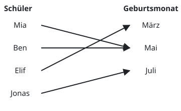

Was eine Funktion ist
Mit einem KI-Tutor lernen
Ein KI-Tutor erklärt dir diese Seite und hilft dir bei den Aufgaben. Wähl deinen Assistenten:
Mit Claude öffnen Mit ChatGPT öffnen Mit Mistral Vibe öffnen
Du nutzt dein eigenes Konto beim Anbieter. Der Assistent ist kein Angebot von lernapps.net: lernapps liefert nur Inhalte und Aufgaben. Die Wahl gilt für alle Seiten, nur auf diesem Gerät.
Geburtsmonate der Klasse
Die Klasse sammelt Geburtsmonate. Links stehen die Schüler, rechts die Monate. Jeder Pfeil verbindet einen Schüler mit seinem Geburtsmonat. Nach dieser Seite weißt du, was eine Funktion ist.

© CC-BY-4.0Von jedem Schüler geht genau ein Pfeil aus. Zwei Schüler dürfen auf denselben Monat zeigen.
Aufgabe
Lösung
Genau einer richtige Antwort
Elif zeigt nur auf März. Jeder Schüler hat genau einen Geburtsmonat.
Zwei
Bei Elif ist nur ein Pfeil gezeichnet. Zwei Pfeile hätte jemand mit zwei Geburtsmonaten.
Keiner
Von jedem Schüler geht ein Pfeil aus, auch von Elif.
Zu jedem Schüler gehört genau ein Monat.
Genau ein y zu jedem x
Wenn du sicher einen Wert ausrechnen willst, muss er eindeutig sein. Dafür gibt es den Begriff Funktion.
- Funktion
Eine Funktion ist eine Zuordnung, die jedem genau ein zuordnet. Beispiel: Jeder Strecke wird genau ein Fahrpreis zugeordnet.
Zwei verschiedene dürfen dasselbe haben (Mia und Ben haben beide Mai). Ein darf aber nicht zwei verschiedene haben. Dreht man die Pfeile um, gehen von „Mai“ zwei Pfeile aus. Das ist keine Funktion. Die proportionalen und antiproportionalen Zuordnungen aus Kapitel 2 sind dagegen Funktionen: Zu jedem Wert links gehört genau ein Wert rechts.
 © CC-BY-4.0
© CC-BY-4.0Von Mai gehen zwei Pfeile aus: zu Mia und zu Ben. Diese Zuordnung ist keine Funktion.
Merke
Wichtig ist die Richtung. Schüler → Monat ist eine Funktion, Monat → Schüler nicht. Prüfe immer: Geht von jedem Wert links genau ein Pfeil aus?
Beispiel
Strecke und Fahrpreis
Beim Taxi gehört zu 2 km genau ein Preis, zu 3 km genau ein anderer. Strecke → Preis ist eine Funktion.
| Strecke in km | 1 | 2 | 3 |
|---|---|---|---|
| Preis in € | 5 | 7 | 9 |
Jede Strecke kommt nur einmal vor und hat ein .
Übung
Aufgabe
Lösung
Richtige Antwort: Die Aussage stimmt.
Das ist erlaubt. Mia und Ben haben beide Mai. Nicht erlaubt ist nur, dass ein zwei verschiedene hat.
Aufgabe
Lösung
Schüler → Geburtsmonat richtige Antwort
Jeder Schüler hat genau einen Geburtsmonat.
Geburtsmonat → Schüler der Klasse
Zu Mai gehören mehrere Schüler. Ein hat mehrere .
Strecke → Fahrpreis beim Taxi richtige Antwort
Zu jeder Strecke gehört genau ein Preis.
Mensch → Geschwister
Ein Mensch kann mehrere Geschwister haben, oder keines. Das ist kein einzelner Wert.
Prüfe, ob zu jedem Wert links genau ein Wert rechts gehört.
Aufgabe
Lösung
Richtige Antwort: 2
Zu = 2 gehören 6 und 7. Das sind zwei -Werte, also ist die Zuordnung keine Funktion.
Aufgabe
Lösung
(1|3), (2|3), (3|3) richtige Antwort
Jedes kommt nur einmal vor. Dass das immer 3 ist, stört nicht.
(1|3), (1|4), (2|5)
Zu = 1 gehören 3 und 4. Das ist zweimal ein anderer -Wert.
(2|1), (3|1), (2|2)
Zu = 2 gehören 1 und 2. Das ist keine Funktion.
Entscheidend ist, dass jedes nur ein hat.
Das kannst du jetzt: Du prüfst, ob eine Zuordnung eine Funktion ist: Jedes hat genau ein . Als Nächstes lernst du, wie du eine Funktion mit Term und Graph beschreibst.
Fehler gefunden oder eine Idee für diese App?